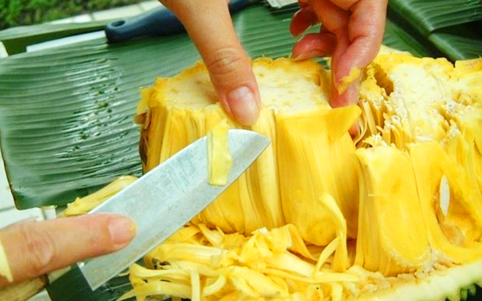

🛒
0
On hot, sunny days, having a jackfruit ice cream cone is wonderful. Today, Group-7 will show you how to make this ice cream! Let's get into the kitchen!
Mix 100g jackfruit pulp, 100ml coconut milk, 100ml condensed milk, and 1 teaspoon vanilla in a bowl.
- Divide the jackfruit into 2 parts, put the first part in a blender, along with ½ bag of fresh milk and blend until smooth.
Then pour the mixture into a large pot.
- Put the remaining jackfruit in the blender with the remaining ½ bag of fresh milk but blend lightly, until the mixture still has
a little bit of jackfruit. Then pour it into the jackfruit pot just now.
- Boil 400ml of filtered water at 40 degrees, then add 1 can
of sweetened condensed milk and stir well until the milk dissolves. Next, add diluted condensed milk and 1 bag of fresh milk
into the pot of jackfruit mixture and stir well until the ingredients dissolve and blend together.
Put the mixture into a cup with a pouring rim, then pour into each small plastic bag until it's all gone. Finally, use elastic or
string to tie the mouth tightly.
After completely sealing the bag, put it in the freezer for about 5 hours to let the smoothie
form ice cream. If you want to eat it soft, just leave it for about 4 hours then put it in the refrigerator for another hour.
You can eat jackfruit ice cream when you first come back from the hot sun for instant refreshment or use it as dessert after
a main meal, which is also very attractive!